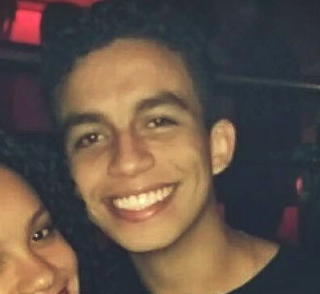
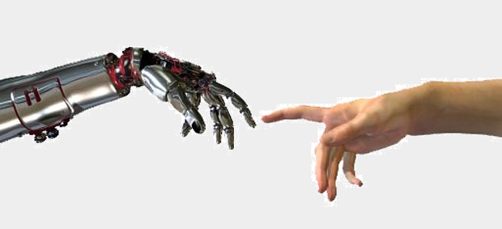

« Quem sou eu?
Olá! Meu nome é Hugo Gonçalves, tenho 18 anos e curso engenharia da Mecânica. Escolhi me tornar engenheiro pelo fascínio que possuo em resolver problemas e tornar real aquilo que é somente ideia. Me considero uma pessoa extrovertida, gosto muito de conversar e fazer novos amigos.

« O que eu faço?
Na faculdade, minhas matérias favoritas são as que envolvem eletrônica e análise de dados, tanto é que um dos meus passatempos favoritos é criar circuitos divertidos na protoboard. Também gosto de sair com amigos e jogar basquete.
« Minhas Ambições
No futuro, gostaria de trabalhar no ramo da engenharia atrelado à área da saúde, embora, ao longo da carreira, eu deseje atuar em diversos setores, como o automotivo e o energético. Também desejo criar projetos de inclusão tecnológica em zonas carentes, pois vejo a tecnologia como um meio de diminuir a desigualdade social.
